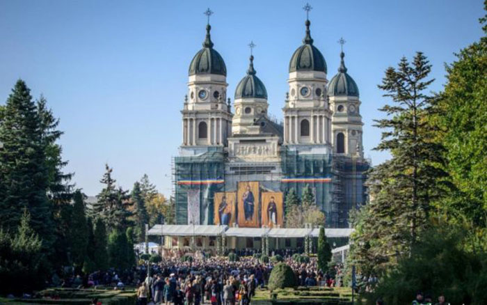

The Metropolitan Cathedral in Iasi, Saint Parascheva, is one of the most important Orthodox churches in our country. Is the cathedral church of the Moldavian and Bucovina Metropolitan Church, one of the six Orthodox metropolitan cathedrals in Romania.
